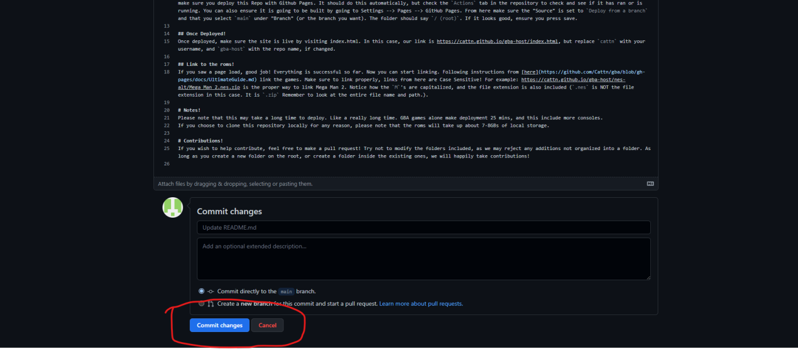

GBA-HOST Setup Guide + Info!
Self Host Guide
Step 1: Forking + Account
Navigate to the github repo, It can be found below
Here!Next, login or create a github account (You can do it at school, and it's free!)
Then, click the fork button
Ensure that the owner is set to the correct account.
NOTE PLEASE DO NOT CHANGE THE NAME OF THE REPO IF YOU PLAN TO FORK THE GBA SITE!
Click Create Fork.
Step 2: Publishing Pages
Navigate to your newly-made repository.
Click the settings tab
Navigate to the pages section.
In this page, under "Source", click on it, and select "Deploy from a branch"
Step 3: Deploying
Navigate to the Code tab
Click the file "readme.md".
Then, click the edit button.
Then, make a small edit (empty space), and hit the Commit Changes button.
Step 4: Testing Content
Once the workflow has completed (This will likely take around 30-40min) please navigate to:
https://math-study.github.io/gba-host/index.html Please replace "math-study" with your github username.
If you see the test page, then congrats! If not, then please try retrying the steps before, or contact us.
Step 5: Using the deployment
Now that you have a working deployment, you can use it to play the games you are hosting!
Navigate to the settings page on this site, and scroll to "Set Self Deployment"
Simply find or type the below link
https://math-study.github.io/gba-host/ Please replace "math-study" with your username
Put the link in the textbox, then turn the toggle to "ON" afterwords.